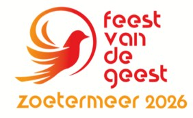

Rond Hemelvaart en Pinksteren openen tien Zoetermeerse kerken (waaronder Parousia Zoetermeer) hun deuren om beeldende kunst te exposeren rondom het thema 'Elkaar verstaan'
In de twee folders hieronder vindt u meer informatie over de tentoonstellingen, de locaties en zelfs een uitgestippelde fietsroute.
Op dinsdagavond 12 mei 2026 bent u van harte uitgenodigd voor de officiële opening van het Feest van de Geest Zoetermeer rondom het thema 'Elkaar verstaan' in de Oude Kerk, Dorpsstraat 59 in Zoetermeer. De start van een unieke zesdaagse tentoonstelling door ruim twintig kunstenaars, verspreid over tien kerkgebouwen.
Programma
19.30 uur Inloop met koffie en thee in De Herberg
19.45 uur Welkom door werkgroep Feest van de Geest Zoetermeer
19.55 uur Digitale presentatie van alle nieuwe themakunst en voorstellen deelnemende kunstenaars
20.10 uur Openingsceremonie door wethouder Jan ledema
20.20 uur Muzikale bijdrage door organist Geurt van Lagen
20.25 uur Afsluiting van het officiële deel en dank aan alle deelnemende kerken
20.30-21.30 Receptie en ontmoeting, met doorlopende presentatie en bezichtiging Oude Kerk-expositie
Wij verwelkomen u graag op 12 mei om de start samen te beleven!
2026_Feest_van_de_Geest_Folder.pdf 1 MB
2026_Feest_van_de_Geest.pdf 2 MB
